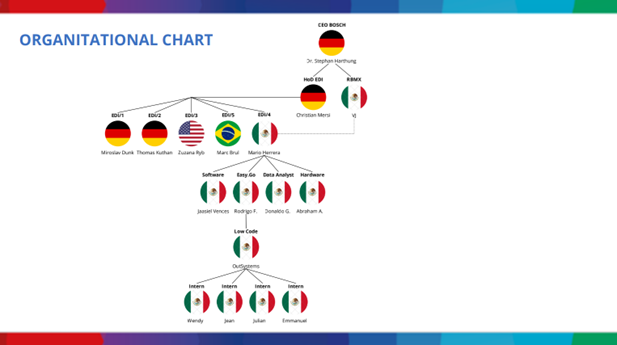
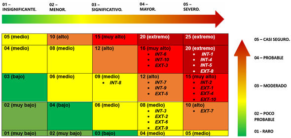
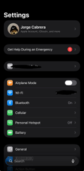
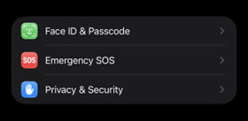
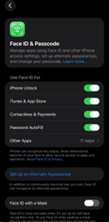
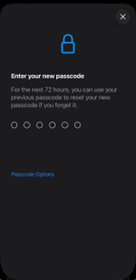

PROPUESTA DE UN SISTEMA DE GESTIÓN DE SEGURIDAD DE LA INFORMACIÓN (SGSI) BASADO EN EL ANEXO SL DE LAS NORMAS ISO/IEC
Datos generales
Empresa: Robert Bosch México Sistemas Automotrices, S.A. de C.V. Documento: Propuesta de un SGSI basado en el Anexo SL de las normas ISO/IEC Departamento: Ciberseguridad de la Universidad Politécnica de San Luis Potosí, México Responsables:
Ávalos Rangel Hazel Mario – 181801
Cabrera Meza Jorge Alejandro – 183095
González Delgado Ángel Josué – 182837
López Castro Diego – 182032
López Monsiváis Jorge Emmanuel – 179842 Revisión: Mtro. Servando López Contreras Fecha de redacción: 26 de abril de 2026
1. Alcance
1.1. Nombre de la empresa
Robert Bosch México Sistemas Automotrices, S.A. de C.V.
1.2. Dirección de la empresa
Eje Central 245, Zona Industrial, 78395 San Luis Potosí, S.L.P., México.
1.3. Misión, visión y valores de la empresa
Misión: ofrecer soluciones tecnológicas a los retos actuales de la humanidad, con enfoque en innovación, seguridad, eficiencia, preservación del medio ambiente y desarrollo del personal.
Visión: crear valor y sostenibilidad bajo principios de credibilidad, responsabilidad social e innovación; impulsar movilidad, eficiencia energética y protección ambiental.
Valores y principios:
Orientación al cliente y calidad de los productos.
Innovación tecnológica y eficiencia.
Responsabilidad social y ambiental.
Credibilidad y ética profesional.
Desarrollo y valorización de los empleados.
1.4. Área de alcance
Electronic Data Interchange (EDI/4).
1.5. Propuesta de SGSI
El SGSI propuesto cubre el departamento Easy.Go del área EDI número 4 de Robert Bosch en San Luis Potosí. Su finalidad es establecer, implementar, mantener y mejorar continuamente controles de protección de la información conforme a ISO/IEC 27001, ISO/IEC 27002, ISO/IEC 27005, ISO/IEC 27031 e ISO/IEC 27034.
El alcance considera riesgos como accesos no autorizados, exposición de datos sensibles, configuraciones incorrectas, fallos de identidades y dependencias de terceros, con el objetivo de proteger la confidencialidad, integridad y disponibilidad de los activos de información.
1.5.1. Activos considerados para el alcance
Aplicaciones desarrolladas mediante la plataforma OutSystems.
Plataforma de desarrollo de aplicaciones OutSystems.
Bases de datos relacionales y no relacionales.
Personal de desarrollo del departamento.
Equipos de cómputo, dispositivos móviles y dispositivos de almacenamiento físico.
Sistemas de almacenamiento en la nube, plataformas de control de versiones y respaldos de información.
Controles de acceso al departamento y al software.
1.6. Organigrama de la empresa

Ilustración 1. Organigrama de BOSCH México
Ilustración 1. Organigrama de BOSCH México
Más sobre la empresa
Bosch México 2025: crecimiento, talento e innovación - Bosch México
2. Referencias normativas
ISO/IEC 27000: visión general y vocabulario de los sistemas de gestión de la seguridad de la información.
ISO/IEC 27001:2022: requisitos para establecer, implementar, mantener y mejorar un SGSI.
ISO/IEC 27002:2022: guía de referencia para la selección e implementación de controles de seguridad.
ISO/IEC 27034: seguridad de aplicaciones y ciclo de vida de desarrollo seguro.
ISO/IEC 27005: gestión de riesgos de seguridad de la información.
ISO/IEC 27031: preparación de las TIC para la continuidad del negocio.
3. Términos y condiciones
Término
Definición
Activo de Información
Cualquier conocimiento o dato con valor para el área de EDI/4, incluyendo código fuente, bases de datos, documentación técnica y credenciales.
Confidencialidad
Propiedad de la información de no estar disponible ni ser revelada a individuos, entidades o procesos no autorizados.
Integridad
Propiedad de salvaguardar la exactitud y completitud de las aplicaciones y datos procesados.
Disponibilidad
Propiedad de que la información y los servicios sean accesibles y utilizables cuando se requieran.
Riesgo de Seguridad de la Información
Efecto de la incertidumbre sobre los objetivos de seguridad; se mide por la probabilidad de que una amenaza explote una vulnerabilidad.
Amenaza
Causa potencial de un incidente no deseado que puede dañar sistemas o activos de la empresa.
Vulnerabilidad
Debilidad de un activo o control que puede ser aprovechada por una o más amenazas.
Gestión de Riesgos
Actividades coordinadas para dirigir y controlar el departamento respecto al riesgo de seguridad.
Declaración de Aplicabilidad (SoA)
Documento que detalla los controles ISO/IEC 27001 seleccionados para el alcance, justificando su inclusión o exclusión.
Parte Interesada
Persona u organización que puede afectar, verse afectada o percibirse como afectada por una decisión o actividad relacionada con el SGSI.
OutSystems (Low-Code)
Plataforma de desarrollo de aplicaciones de alta productividad utilizada como entorno tecnológico principal.
Anexo SL
Estructura de alto nivel utilizada por ISO para armonizar las normas de sistemas de gestión.
4. Contexto de la organización
Activos internos
Personal de departamento EDI.
Laptops del personal EDI.
Teléfonos móviles del personal full-time del departamento EDI.
Gestor de bases de datos híbridas.
Información contenida en las bases de datos.
Aplicaciones desarrolladas mediante OutSystems.
Plataforma de desarrollo de aplicaciones OutSystems.
Dispositivos de almacenamiento físico.
Sistemas de almacenamiento en la nube.
Plataformas y aplicaciones de control de versiones.
Respaldos de información.
Controles de acceso al departamento y al software.
Router Cisco, sistema de videovigilancia, switches Cisco, impresoras, VPN Cisco, firewall Cisco, servidores físicos locales Cisco y access points Cisco.
Activos externos
Proveedores de servicios en la nube de terceros.
Redes de Valor Añadido (VAN) para transacciones EDI.
APIs y Webhooks de servicios externos.
Redes de socios de negocio (conexiones B2B / VPN Site-to-Site).
Consultores, contratistas y auditores externos.
Proveedores de Servicios de Seguridad Administrada (MSSP).
Herramientas de soporte y mantenimiento remoto de terceros.
Bibliotecas de software y dependencias de terceros.
Proveedores de almacenamiento físico externo.
Proveedores de Identidad Externos (IdP).
Fuentes de Inteligencia de Amenazas externas (Threat Intelligence Feeds).
Servicios externos de envíos de correo transaccional.
5. Liderazgo
El documento define una política general de protección, acceso y tránsito de la información con el objetivo de garantizar la confidencialidad, integridad y disponibilidad de la información corporativa. Para ello, se establecen políticas específicas por activo interno y externo, cada una con su estándar, directriz, procedimiento y línea base.
Activos internos seleccionados
Personal de departamento EDI
Información contenida en las bases de datos
Respaldos de información
Sistemas de almacenamiento en la nube
Dispositivos de almacenamiento físico
Servidores físicos locales
Laptops del personal EDI
Teléfonos móviles del personal full-time
Plataformas y aplicaciones de control de versiones (OutSystems / Git)
VPN Cisco
Política general de protección, acceso y tránsito de la información
Objetivo: garantizar la confidencialidad, integridad y disponibilidad de la información corporativa en todos sus estados a través de la infraestructura del departamento EDI/4 de Robert Bosch Sistemas Automotrices S.A. de C.V.
Información contenida en las bases de datos
Política: Garantizar la confidencialidad de la información crítica del negocio.
Estándar: Toda la información clasificada como Confidencial debe estar cifrada tanto en reposo como en tránsito.
Directriz: Usar herramientas automatizadas para descubrimiento y etiquetado de datos sensibles.
Procedimiento: Evaluar impacto, asignar etiqueta y cifrar si corresponde.
Línea base: Cifrado mínimo aceptable para datos en reposo: AES-256.
Gestor de bases de datos híbridas (DBMS)
Política: El acceso lógico a las bases de datos debe estar estrictamente controlado, autenticado y auditado.
Estándar: Administradores y desarrolladores deben usar MFA para acceder al DBMS.
Directriz: Revisar y depurar permisos de acceso de forma trimestral.
Procedimiento: Solicitar acceso, aprobar por gerencia EDI y crear usuario con rol correspondiente.
Línea base: Puertos públicos deshabilitados y logs de auditoría transaccional habilitados.
Servidores físicos locales
Política: Proveer un entorno físico y lógico seguro para el procesamiento de la información corporativa.
Estándar: Ubicar servidores en centro de datos o cuarto de comunicaciones con acceso restringido.
Directriz: Mantener monitoreo de temperatura y humedad con sensores automatizados.
Procedimiento: Registrar visita, escanear gafete o huella y cerrar la puerta correctamente.
Línea base: Sistema operativo en versión Core y firewall nativo encendido.
Sistemas de almacenamiento en la nube
Política: La información almacenada en nube debe protegerse contra exposición pública y accesos no autorizados.
Estándar: Todos los buckets o contenedores deben ser privados.
Directriz: Activar alertas de facturación para detectar anomalías o picos de transferencia.
Procedimiento: Ejecutar plantilla IaC autorizada, asignar grupo IAM y desplegar recurso.
Línea base: Bloquear todo el acceso público a nivel de cuenta.
Respaldos de información (Backups)
Política: Asegurar disponibilidad y rápida recuperación de la información.
Estándar: Cumplir estrictamente la regla 3-2-1 para información crítica.
Directriz: Rotar al personal en las pruebas de restauración para democratizar el conocimiento.
Procedimiento: Seleccionar backup, restaurarlo en entorno aislado, validar integridad y documentar tiempo.
Línea base: Retención mínima de 30 días y inmutabilidad activada.
Dispositivos de almacenamiento físico (USBs, discos externos)
Política: Prevenir fuga de información o introducción de malware por medios extraíbles.
Estándar: Queda prohibido el uso de USB personales; solo se permiten dispositivos provistos por la empresa.
Directriz: Evitar sacar medios corporativos de las instalaciones salvo necesidad justificada.
Procedimiento: Levantar ticket, recibir dispositivo y conectar con contraseña de descifrado cuando se solicite.
Línea base: Puertos USB en modo solo lectura para dispositivos no registrados.
Laptops del personal EDI
Política: Los equipos portátiles deben mantenerse protegidos contra software malicioso, accesos no autorizados y robos.
Estándar: Todas las laptops deben contar con cifrado de disco y EDR instalado.
Directriz: Recibir formación anual sobre identificación de phishing.
Procedimiento: Notificar a TI, ejecutar bloqueo/borrado remoto y levantar acta ante autoridades en caso de robo.
Línea base: Bloqueo de sesión tras 5 minutos de inactividad.
Teléfonos móviles del personal full-time
Política: Los dispositivos móviles que procesen o accedan a datos del departamento EDI deben ser gestionados de manera segura.
Estándar: Todo dispositivo que reciba correo corporativo debe estar enrolado en MDM.
Directriz: Mantener apagadas Bluetooth y Wi-Fi cuando no se utilicen.
Procedimiento: Instalar app MDM, iniciar sesión y aceptar el Perfil de Trabajo.
Línea base: PIN mínimo de 6 dígitos o biometría por defecto.
Plataformas y aplicaciones de control de versiones (OutSystems / Git)
Política: El ciclo de desarrollo debe integrar controles de seguridad para proteger la integridad del código fuente.
Estándar: No se permiten commits directos a producción sin revisión aprobatoria.
Directriz: Ejecutar escáneres de código estático antes de subir cambios.
Procedimiento: Crear rama, programar, hacer commit, abrir Pull Request, aprobar y fusionar.
Línea base: Los repositorios rechazan archivos con extensiones críticas como .pem, .key o .env.
VPN Cisco (Seguridad de comunicaciones)
Política: Las comunicaciones remotas deben realizarse exclusivamente a través de canales cifrados.
Estándar: Todo acceso exterior debe usar Cisco AnyConnect y requerir MFA.
Directriz: Desconectar la VPN al finalizar la jornada para evitar saturación del ancho de banda.
Procedimiento: Abrir cliente, ingresar credenciales, aprobar desde la autenticadora y esperar 'Conectado'.
Línea base: Bloquear túnel dividido y forzar el tráfico a pasar por el firewall corporativo.
Activos externos seleccionados
Proveedores de servicios en la nube de terceros.
Redes de Valor Añadido (VAN) para transacciones EDI.
APIs y Webhooks de servicios externos.
Redes de socios de negocio (Conexiones B2B).
Consultores, contratistas y auditores externos.
Proveedores de Servicios de Seguridad Administrada (MSSP).
Herramientas de soporte y mantenimiento remoto de terceros.
Bibliotecas de software y dependencias de terceros.
Proveedores de almacenamiento físico externo.
Proveedores de Identidad Externos (IdP).
Política general de gestión y enlace con activos externos
Objetivo: mitigar los riesgos asociados a la cadena de suministro y garantizar la seguridad, confidencialidad y disponibilidad de la información al interactuar con entidades, plataformas y servicios fuera del perímetro de la infraestructura del departamento EDI.
Proveedores de servicios en la nube de terceros
Política: El uso de servicios cloud de terceros debe alinearse con requisitos de seguridad corporativa.
Estándar: Todo proveedor cloud debe presentar certificado SOC 2 Tipo II o ISO 27001 vigente.
Directriz: Priorizar proveedores con integración nativa con el directorio activo local.
Procedimiento: Solicitar evaluación de riesgos, validar certificaciones, firmar SLA y confidencialidad.
Línea base: Bloquear acceso público a repositorios o buckets por defecto.
Redes de Valor Añadido (VAN) para transacciones EDI
Política: Las transacciones por redes de terceros deben mantener integridad y confidencialidad de extremo a extremo.
Estándar: El intercambio EDI debe realizarse con protocolos cifrados y autenticación mutua; AS2 o SFTP autorizados.
Directriz: Programar rotación de certificados en horarios de bajo volumen.
Procedimiento: Generar llaves, intercambiar certificados, configurar gateway y probar loopback.
Línea base: TLS 1.2 o superior para conexiones externas.
APIs y Webhooks de servicios externos
Política: La interacción con APIs de terceros debe estar autenticada, controlada y protegida contra abuso.
Estándar: Ninguna credencial o token debe quedar en texto plano en el código fuente.
Directriz: Implementar reintentos con exponential backoff para caídas temporales.
Procedimiento: Registrar app, obtener Client ID/Secret, guardar en Secret Vault e implementar consumo.
Línea base: API Gateway con rate limiting predeterminado.
Redes de socios de negocio (Conexiones B2B)
Política: Las conexiones de red con terceros deben aislarse para prevenir movimiento lateral hacia la red interna.
Estándar: Toda VPN Site-to-Site debe terminar en DMZ con reglas de firewall restrictivas.
Directriz: Documentar y mantener actualizado un diagrama de flujo de red por cada conexión.
Procedimiento: Llenar requerimiento, negociar IPsec, configurar túnel y aplicar ACLs.
Línea base: AES-256 y Diffie-Hellman grupo 14 o superior.
Consultores, contratistas y auditores externos
Política: El personal externo operará bajo el principio de menor privilegio.
Estándar: Las cuentas externas deben tener fecha de expiración desde su creación.
Directriz: Auditar periódicamente actividades de consultores en sistemas críticos.
Procedimiento: Firmar NDA, levantar ticket, entregar credenciales temporales y deshabilitar la cuenta al vencer.
Línea base: MFA obligatoria antes del primer inicio de sesión.
Proveedores de Servicios de Seguridad Administrada (MSSP)
Política: La externalización del monitoreo no debe comprometer privacidad ni soberanía de la información.
Estándar: Los logs al SOC externo deben filtrar o anonimizar PII y datos financieros.
Directriz: Revisiones mensuales con el MSSP para afinar reglas de detección.
Procedimiento: Definir alcance, configurar enmascaramiento y reenvío, validar eventos y aprobar escalamiento.
Línea base: Canal cifrado extremo a extremo mediante mTLS.
Herramientas de soporte y mantenimiento remoto de terceros
Política: El soporte remoto debe ser autorizado, documentado, supervisado y registrado.
Estándar: Las sesiones deben realizarse exclusivamente a través de la plataforma PAM corporativa.
Directriz: Informar a usuarios cuando una sesión externa requiera reiniciar servicios críticos.
Procedimiento: Solicitar ventana, aprobar ticket, generar acceso temporal y grabar la sesión.
Línea base: Sin transferencia bidireccional de archivos ni uso de portapapeles.
Bibliotecas de software y dependencias de terceros
Política: Todo paquete integrado debe estar libre de vulnerabilidades críticas conocidas.
Estándar: Es obligatorio ejecutar herramientas SCA antes de autorizar producción.
Directriz: Evaluar la salud de repositorios públicos antes de adoptar dependencias.
Procedimiento: Ejecutar SCA, revisar hallazgos, actualizar versiones seguras y recompilar.
Línea base: Bloqueo automático si la dependencia supera CVSS v3 mayor a 7.0.
Proveedores de almacenamiento físico externo (Custodia off-site)
Política: Los respaldos fuera de las instalaciones deben protegerse contra pérdida, robo o acceso indebido.
Estándar: Toda cinta o disco enviado a custodia externa debe estar cifrado en su totalidad.
Directriz: Realizar auditoría física anual sin previo aviso.
Procedimiento: Ejecutar respaldo cifrado, embalar, firmar cadena de custodia y archivar recibo.
Línea base: AES-256 como algoritmo mínimo en la consola de backup.
Proveedores de Identidad Externos (IdP)
Política: La validación delegada debe asegurar que sólo usuarios verificados y dispositivos confiables accedan.
Estándar: La integración debe usar SAML 2.0 u OpenID Connect (OIDC).
Directriz: Suscribirse a boletines del proveedor para monitorear brechas o actualizaciones.
Procedimiento: Configurar el SP, intercambiar metadatos y certificados, mapear atributos y probar SSO.
Línea base: Geo-blocking habilitado por defecto para países sancionados o no operativos.
Matriz de RACI de políticas de seguridad
Política
Project Manager
Team Lead
Developer
Tester
Stakeholder
Información contenida en las bases de datos
A
R
C
I
I
Gestor de bases de datos híbridas (DBMS)
I
A
I
I
I
Servidores físicos locales
A
R
C
I
I
Sistemas de almacenamiento en la nube
I
A
I
I
I
Respaldos de información (Backups)
A
R
I
I
I
Dispositivos de almacenamiento físico (USBs, discos externos)
I
A
R
R
I
Laptops del personal EDI
I
A
I
I
I
Teléfonos móviles del personal full-time
A
R
C
I
I
Plataformas y aplicaciones de control de versiones (OutSystems / Git)
I
A
I
I
I
VPN Cisco (Seguridad de comunicaciones)
A
R
C
I
I
Proveedores de servicios en la nube de terceros
A
C
I
I
R
Redes de Valor Añadido (VAN) para transacciones EDI
I
A
R
C
I
APIs y Webhooks de servicios externos
I
A
R
R
I
Redes de socios de negocio (Conexiones B2B)
A
C
R
I
C
Consultores, contratistas y auditores externos
R
I
I
I
A
Proveedores de Servicios de Seguridad Administrada (MSSP)
A
R
I
I
I
Herramientas de soporte y mantenimiento remoto de terceros
A
R
I
I
C
Bibliotecas de software y dependencias de terceros
I
A
R
C
I
Proveedores de almacenamiento físico externo (Custodia off-site)
A
C
I
I
R
Proveedores de Identidad Externos (IdP)
A
R
C
I
C
Leyenda
R = Responsable
A = Aprobador
C = Consultado
I = Informado
6. Planificación
En la siguiente matriz de riesgos se identifican los niveles de riesgo de cada una de las políticas basados en los 10 activos internos y 10 activos externos propuestos para este SGSI.
La matriz de riesgo original del PDF es una imagen; por ello, aquí se deja el contenedor listo para vincularla manualmente.

Matriz de riesgo
Seguido de la matriz de riesgo, se anexa una tabla de detalles con la interpretación de cada riesgo para facilitar su comprensión.
Tabla de detalle de riesgos
ID
Política
Riesgo a prevenir
Probabilidad
Impacto
Nivel de riesgo
Acción de la política
IN-T-1
Bases de datos
Fuga o robo de información confidencial en texto plano.
04 Probable
05 Severo
20 (Extremo)
Mitigar (cifrado AES-256 y clasificación).
IN-T-2
Gestor de BD (DBMS)
Accesos no autorizados que comprometan la integridad de los datos.
03 Moderado
05 Severo
15 (Muy alto)
Mitigar (MFA, auditoría y control de roles).
IN-T-3
Servidores físicos
Daño físico, robo o sabotaje directo a la infraestructura central.
02 Poco probable
04 Mayor
08 (Medio)
Mitigar (control biométrico y sensores).
IN-T-4
Almacenamiento en nube
Exposición accidental de datos corporativos a internet público.
04 Probable
05 Severo
20 (Extremo)
Mitigar (bloqueo público e IaC).
IN-T-5
Respaldos (Backups)
Pérdida irrecuperable de datos por ransomware o desastres.
04 Probable
05 Severo
20 (Extremo)
Mitigar (regla 3-2-1 e inmutabilidad).
IN-T-6
Almacenamiento físico (USBs)
Infección por malware e infiltración/exfiltración de datos.
04 Probable
04 Mayor
16 (Muy alto)
Mitigar (GPO de solo lectura, USBs cifradas).
IN-T-7
Laptops del personal
Robo de equipo portátil resultando en fuga de datos e intrusión.
03 Moderado
04 Mayor
12 (Alto)
Mitigar (cifrado de disco, EDR, bloqueo remoto).
IN-T-8
Teléfonos móviles
Pérdida del dispositivo y acceso a correos/sistemas corporativos.
03 Moderado
03 Significativo
09 (Medio)
Mitigar (MDM, perfil de trabajo, PIN biométrico).
IN-T-9
Control de versiones (Git)
Inyección de código malicioso o exposición de llaves/secretos.
03 Moderado
04 Mayor
12 (Alto)
Mitigar (Pull Requests, escáner de código).
IN-T-10
VPN Cisco
Interceptación de tráfico remoto o acceso no autorizado a red.
04 Probable
04 Mayor
16 (Muy alto)
Mitigar (túnel cifrado sin división, MFA).
EX-T-1
Proveedores Cloud
Brecha de seguridad derivada de infraestructura de terceros.
03 Moderado
05 Severo
15 (Muy alto)
Transferir / mitigar (exigir SOC 2 / ISO 27001).
EX-T-2
Redes VAN para EDI
Interceptación de datos logísticos/financieros en tránsito B2B.
02 Poco probable
04 Mayor
08 (Medio)
Mitigar (TLS 1.2+, AS2/SFTP).
EX-T-3
APIs y Webhooks
Abuso de consumo, ataques de denegación de servicio (DDoS).
04 Probable
04 Mayor
16 (Muy alto)
Mitigar (rate limiting, bóveda de secretos).
EX-T-4
Redes B2B
Movimiento lateral hacia la red interna desde un socio vulnerado.
03 Moderado
05 Severo
15 (Muy alto)
Mitigar (túneles en DMZ, ACLs, IPsec).
EX-T-5
Consultores externos
Abuso de privilegios o persistencia no autorizada en sistemas.
03 Moderado
04 Mayor
12 (Alto)
Mitigar (cuentas con expiración, mínimo privilegio).
EX-T-6
Proveedores MSSP
Fuga de datos personales (PII) a través de bitácoras exportadas.
02 Poco probable
04 Mayor
08 (Medio)
Mitigar (enmascaramiento de logs, mTLS).
EX-T-7
Soporte de terceros
Cambios críticos no autorizados o instalación de puertas traseras.
02 Poco probable
05 Severo
10 (Alto)
Mitigar (PAM, sesiones grabadas, supervisión).
EX-T-8
Dependencias/Software
Explotación de vulnerabilidades heredadas (ataques de cadena de suministro).
04 Probable
05 Severo
20 (Extremo)
Mitigar (análisis SCA, bloqueo por CVSS > 7.0).
EX-T-9
Custodia off-site
Robo o extravío de cintas magnéticas durante el traslado físico.
02 Poco probable
04 Mayor
08 (Medio)
Mitigar (cifrado LTO AES-256, cadena de custodia).
EX-T-10
Proveedores IdP
Suplantación de identidad desde ubicaciones geográficas anómalas.
03 Moderado
05 Severo
15 (Muy alto)
Mitigar (SAML/OIDC, Geo-blocking, MFA).
7. Soporte
7.1. Minuta de concientización en seguridad de la información
Empresa: Robert Bosch Sistemas Automotrices Departamento: Easy.Go – EDI/4 Tema: Concientización sobre Seguridad de la Información y SGSI Fecha: 15 de mayo de 2026 Hora: 10:00 AM – 10:46 AM Lugar: Sala de juntas EDI/4 / Microsoft Teams Responsable: Departamento de Ciberseguridad UPSLP Moderadores: Diego López Castro, Hazel Mario Ávalos Rangel
Objetivo de la reunión
Concientizar al personal del departamento EDI/4 sobre la importancia del SGSI y reforzar buenas prácticas para proteger la confidencialidad, integridad y disponibilidad de la información corporativa.
Participantes
Project Manager
Team Lead
Developers
Testers
Personal de TI
Contratistas autorizados
Temas tratados
Introducción al SGSI: definición, importancia de ISO/IEC 27001 y riesgos de seguridad en el desarrollo de software.
Políticas de seguridad implementadas: uso correcto de VPN Cisco, manejo seguro de contraseñas, MFA, protección de información confidencial y control de acceso a repositorios y bases de datos.
Riesgos comunes: phishing, robo de credenciales, uso de USB no autorizadas, fuga de información y vulnerabilidades en librerías externas.
Buenas prácticas: bloquear equipos al ausentarse, no compartir accesos, reportar incidentes y usar correctamente el correo corporativo.
Responsabilidades del personal: cumplir políticas del SGSI, participar en capacitaciones, reportar incidentes y proteger activos de información.
Acuerdos establecidos
Acuerdo
Responsable
Frecuencia / fecha
Capacitación anual de phishing
TI / Seguridad
Semestral
Revisión de accesos
Team Leads
Trimestral
Validación de MFA
TI
Inmediato
Simulacros de incidentes
Seguridad Informática
Próximo trimestre
Presentación informativa
8. Operación
Dentro de las 20 políticas establecidas, la política sobre el uso de los teléfonos móviles del personal full-time establece que los dispositivos móviles que procesen o accedan a datos del departamento EDI deben ser gestionados de manera segura.
Esto es importante porque un mal uso puede permitir una escalada de privilegios desde el dispositivo móvil hacia la red del sistema u otros activos de la empresa.
La línea base de la política establece que el MDM forzará un PIN mínimo de 6 dígitos o autenticación biométrica de forma predeterminada.
Configuración de autenticación biométrica
Ingresar a la aplicación de configuración del dispositivo.
Seleccionar la opción FaceID & Passcode.
Activar FaceID y realizar la prueba de configuración biométrica.
Agregar un passcode e ingresar un código de 6 dígitos.
Se deja el espacio para las imágenes de evidencia asociadas a esa configuración.




8.1. Planificación y control operacional
El departamento EDI/4 planifica, implementa, controla, supervisa y revisa los procesos necesarios para cumplir los requisitos de seguridad de la información.
Criterios para los procesos: procedimientos operativos documentados para acceso a sistemas, gestión de incidentes, respaldo de información y control de cambios.
Control de cambios planificados: toda modificación de infraestructura, OutSystems o procesos pasa por un proceso formal de evaluación de impacto.
Procesos externalizados: se controlan servicios en la nube, soporte remoto y proveedores VAN conforme a requisitos de Bosch.
Documentación de la información: se conservan registros de acceso, logs, actas de reuniones y reportes de incidentes.
9. Evaluación del rendimiento
Checklist de auditoría interna del SGSI
Este documento establece el resultado de la auditoría interna para el SGSI del departamento EDI/4 de Bosch. Se evaluaron 20 políticas y controles clave basados en ISO/IEC 27001 y las guías del INCIBE.
Instrucciones para el auditor: para cada control, evalúe el nivel de cumplimiento indicando “Cumple”, “No Cumple” o “Parcial” y detalle en evidencias los documentos revisados, configuraciones comprobadas o entrevistas realizadas.
No.
Política / Control de Seguridad
Estado
Evidencias / observaciones
1
Política General de Seguridad: Aprobada y comunicada a todo el personal.
Cumple
Documento “Política SGSI V2.0” firmado por el Director de Planta. Comunicado vía boletín interno el 15/01/2026.
2
Revisión de Políticas: Se evalúan y actualizan al menos anualmente.
No cumple
La política de teletrabajo no se ha actualizado desde hace 18 meses. Requiere revisión por RRHH y TI.
3
Roles y Responsabilidades: Definidos y asignados formalmente.
Cumple
Matriz RACI de ciberseguridad publicada en la intranet corporativa (Confluence).
4
Seguridad en Proyectos (Security by Design): Integrada desde el inicio.
Parcial
2 de 5 proyectos nuevos de EDI/4 omitieron la fase de evaluación de riesgos inicial. Se levantó no conformidad menor.
5
Inventario de Activos: Actualizado y detallado.
Cumple
Revisión de la plataforma GLPI; el escaneo de red coincide en un 98% con el registro documental.
6
Clasificación de la Información: Uso de etiquetas (Pública, Interna, Confidencial).
No cumple
Se encontraron reportes financieros en servidores compartidos sin la etiqueta de “Confidencial”.
7
Borrado Seguro y Destrucción: Eliminación certificada de datos en equipos obsoletos.
Cumple
Actas de destrucción magnética emitidas por proveedor externo (Folio #8472) de 15 laptops.
8
Principio de Mínimo Privilegio: Permisos limitados estrictamente a las funciones del rol.
Cumple
Auditoría de Active Directory: no hay usuarios operativos en el grupo de Domain Admins.
9
MFA y VPN: Autenticación multifactor para servicios en la nube y accesos remotos.
Cumple
Logs de Microsoft Entra ID verificados; el 100% de accesos VPN Cisco exigen validación de token.
10
Gestión de Altas y Bajas: Retirada inmediata de accesos al cesar labores.
No cumple
Se identificaron 2 cuentas de ex-empleados activas por más de 72 horas después de su salida.
11
Monitoreo de Accesos: Registro de intentos fallidos de autenticación.
Cumple
Alertas activas en el SIEM corporativo. Bloqueo automático tras 5 intentos fallidos.
12
Control de Acceso Físico: Protección en CPD y áreas restringidas.
Cumple
Funcionamiento de lectores biométricos y cámaras en la entrada del site principal.
13
Regla de Backup 3-2-1: Copias de seguridad periódicas y descentralizadas.
Cumple
Logs de Veeam Backup confirmados. Copias inmutables en AWS S3.
14
Pruebas de Restauración (Disaster Recovery): Verificación de integridad de backups.
No cumple
No existe evidencia documentada de un simulacro de restauración de la base de datos principal en el último año.
15
Protección Endpoint (EDR/Antimalware): Software actualizado en todas las estaciones.
Cumple
Consola centralizada muestra el 99.5% de los equipos con el agente EDR en estado óptimo.
16
Cifrado AES-256: Aplicado en laptops y transferencia de datos sensibles.
Cumple
Validación mediante GPO. BitLocker está activo y no puede ser deshabilitado por el usuario.
17
Gestión de Vulnerabilidades y Parches: Actualizaciones críticas instaladas a tiempo.
Cumple
Reporte de escaneo Nessus sin vulnerabilidades críticas. Parches desplegados vía WSUS en la semana 2.
18
Plan de Respuesta a Incidentes: Documentado y con equipo de respuesta designado.
Cumple
CSIRT interno conformado. Procedimiento de escalamiento actualizado en febrero de 2026.
19
Firma de Acuerdos de Confidencialidad (NDA): Obligatorio previo al acceso a sistemas.
Cumple
Muestreo aleatorio de 20 expedientes en RRHH; todos contienen el NDA firmado.
20
Campañas de Concientización y Phishing: Formación periódica al personal.
Parcial
Se realizó la capacitación, pero la campaña de simulacro de phishing tiene más de un año de atraso.
Resumen de la auditoría
Total de controles evaluados: 20
Controles en cumplimiento: 14
Incumplimientos identificados: 4
Cumplimientos parciales: 2
Firma y validación
Fecha de la auditoría: 13 de mayo de 2026 Auditor líder: Ailton Israel Dominguez Hernandez Responsable del SGSI: Diego Lopez Castro
10. Mejora
10.1. Descripción del incidente: ¿Qué sucedió?
Un colaborador del equipo EDI/4 fue víctima del robo de su laptop corporativa mientras laboraba de manera remota en una cafetería pública. El equipo estaba encendido y la sesión iniciada; el usuario se levantó sin bloquearla y, al regresar, la laptop ya no se encontraba en la mesa.
Como el equipo fue sustraído mientras estaba en uso, existió una ventana crítica en la que un tercero pudo haber accedido a información corporativa antes de que el sistema se bloqueara automáticamente.
10.2. Análisis de causa raíz: ¿Por qué se materializó la amenaza?
Falla en la seguridad física: el usuario abandonó un equipo corporativo en un espacio público de alto tránsito.
Brecha en la línea base de configuración: el bloqueo de sesión estaba configurado a 5 minutos; el robo ocurrió minutos antes, con la sesión activa.
Efectividad del procedimiento reactivo: el protocolo de respuesta ayudó a contener el impacto mediante bloqueo y borrado remoto dentro del margen operativo.
10.3. Línea temporal del incidente
09:15 a.m. El usuario inicia jornada remota; EDR conectado y disco cifrado.
10:42 a.m. El usuario abandona la mesa por una llamada personal, dejando la laptop abierta y con sesión activa.
10:44 a.m. Un individuo sustrae el equipo de la mesa.
10:48 a.m. El usuario regresa y detecta la ausencia del equipo.
11:15 a.m. El usuario notifica a la mesa de ayuda de TI dentro de la primera hora.
11:22 a.m. Seguridad de TI ejecuta bloqueo forzado y borrado remoto.
11:25 a.m. La consola confirma la ejecución exitosa del wipe.
01:30 p.m. El usuario presenta el acta por robo y envía la copia a RRHH y TI.
10.4. Conclusiones y plan de acción
Los controles reactivos funcionaron como fueron diseñados y evitaron una fuga masiva de datos. Sin embargo, el incidente confirma la necesidad de fortalecer la prevención.
Reducir el tiempo de bloqueo de pantalla de 5 a 3 minutos en todos los equipos del personal EDI.
Ampliar la capacitación para incluir seguridad física de activos tecnológicos y el hábito de bloqueo manual inmediato al alejarse del equipo.